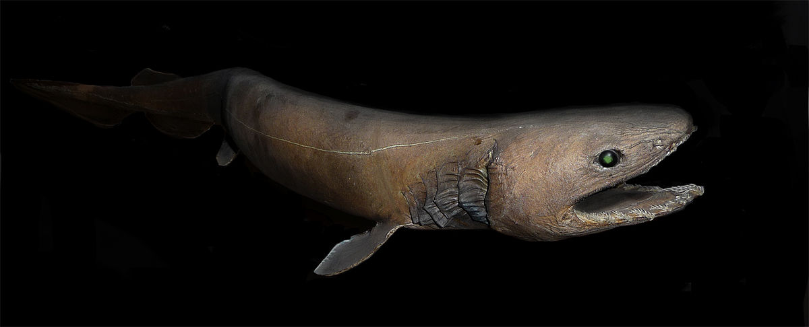

TUBARÃO-BALEIA, O MAIOR DELES!
O tubarão-baleia (nome científico: Rhincodon typus) é uma espécie de tubarão filtrador da ordem dos orectolobiformes e a maior espécie de peixe existente conhecida. O maior indivíduo confirmado tinha um comprimento de 18,8 metros (61,7 pés).O tubarão-baleia detém muitos recordes de tamanho no reino animal, sendo de longe o maior vertebrado não mamífero vivo. o único membro do gênero Rhincodon e o único membro existente da família dos rincodontídeos (Rhincodontidae), que pertence à subclasse dos elasmobrânquios (Elasmobranchii) na classe Chondrichthyes. Antes de 1984 foi classificado como Rhiniodon nos rinodontídeos (Rhinodontidae). O tubarão-baleia é encontrado em águas abertas dos oceanos tropicais e raramente é encontrado em águas abaixo de 21 °C (70 °F).Estudos analisando as bandas de crescimento vertebral e as taxas de crescimento de tubarões que nadam livremente estimaram a expectativa de vida do tubarão-baleia em 80-130 anos. Os tubarões-baleia têm bocas muito grandes e são filtradores, que é um modo de alimentação que ocorre em apenas dois outros tubarões, O tubarão-boca-grande . e o tubarão-peregrino. Alimentam-se quase exclusivamente de plâncton e pequenos peixes e não representam uma ameaça para os seres humanos.


Easter egg do Tutubazinho:
mais 1000 de sorte
Curiosidades sobre o tubarão-baleia tutubas
- Curiosidade 1
- Por mais bobo que pareça o coletivo de tubarão-baleia é cardume
- Curiosidade 2
- O nome "tubarão-baleia" refere-se ao tamanho do peixe, sendo tão grande quanto algumas espécies de baleias, e também por ser um filtrador como os misticetos.
- Curiosidade 3
- O tubarão-baleia esta ameaçado de instinção ):
| Classificação científica | |||||
|---|---|---|---|---|---|
| Reino: Animalia | Filo: Chordata | Subfilo: Vertebrata | Infrafilo: Gnathostomata | Classe: Chondrichthyes | Ordem: Orectolobiformes |
TUBARÃO-MARTELO, Barao do Martelo
O tubarão-martelo é um gênero de tubarão, característico pelas projeções existentes em ambos os lados da cabeça, onde se localizam os olhos e as narinas. O tubarão-martelo é um predador que consome peixes, cefalópodes, raias e outros tubarões. Ocorre em áreas temperadas e quentes de todos os oceanos em zonas de plataforma continental. São animais gregários que se deslocam em cardumes que podem atingir 100 exemplares. O formato hidrodinâmico lhe proporciona uma maior velocidade na hora de girar a cabeça. E também porta um maior número de ampolas de Lorenzini, que têm a função de detectar campos magnéticos tão minúsculos quanto o batimento cardíaco de pequenos peixes. As espécies conhecidas de tubarão-martelo têm um comprimento entre 0,9 e 6 metros. Todas as espécies têm duas projeções, uma de cada lado da cabeça, dando a esta o aspecto de um martelo, de onde vem o nome popular da espécie. Os olhos e fossas nasais estão localizados nas extremidades das projeções. Antes pensava-se que a cabeça em forma de martelo ajudava os tubarões a conseguir comida, dando ao tubarão a habilidade de virar a cabeça com precisão e rapidamente sem perder a estabilidade. Porém, foi descoberto que suas vértebras o permitiam a virar com precisão a cabeça e o resto do corpo. Mas o "martelo" também funciona como uma asa, dando estabilidade a eles quando vão nadar, já que os tubarões-martelo são um dos piores tubarões quando o assunto é manter-se "flutuando" estavelmente dentro da água.

Curiosidades sobre o Tubarão-Martelo
- Curiosidade 1
- o tubarão-martelo não é uma espécie perigosa para os seres humanos
- Curiosidade 2
- Duas das três espécies de tubarões-martelo estão classificadas como em "risco crítico" de extinção
| Classificação científica | |||||
|---|---|---|---|---|---|
| Reino: Animalia | Filo: Chordata | Família: Sphyrnidae | Género: Sphyrna | Classe: Chondrichthyes | Ordem: Carcharhiniformes |
TUBARÃO-COBRA
O tubarão-cobra (Chlamydoselachus anguineus) ou tubarão-enguia é uma espécie da família Chlamydoselachidae. Junto com C. africana, representa as duas últimas espécies viventes dos Chlamydoselachidae. Esta espécie possui corpo longo, atingindo até dois metros de comprimento. A cabeça do tubarão-cobra é larga e achatada, com focinho curto e arredondado, e olhos moderadamente grandes que não possuem membrana nictitante. Cabeça do tubarão-cobra Na boca, contém cerca de 300 dentes em forma de tridente, característicos do grupo. Os tubarões-cobra são capazes de abrir significativamente suas mandíbulas e devorar alimentos consideravelmente maiores do que o seu tamanho. Apresenta seis pares de longas fendas branquiais; o primeiro par de fendas branquiais forma um colar, enquanto as pontas estendidas dos filamentos branquiais criam um folho. As barbatanas peitorais são curtas e arredondadas; a única e pequena barbatana dorsal é arredondada e está posicionada na extremidade do corpo, aproximadamente oposta à barbatana anal. As barbatanas pélvicas e anais são grandes, largas e arredondadas e estão posicionadas na extremidade caudal do corpo. A barbatana caudal é longa e triangular, sem lobo inferior ou incisura ventral no lobo superior.
Curiosidades sobre o Tubarão-Cobra
- Curiosidade 1
- O tubarão-cobra encontra-se ameaçado de extinção devido à ação humana.
- Curiosidade 2
- o tubarão-cobra é catalogado pelos cientistas como um verdadeiro fóssil vivo, visto que ele tem características ancestrais e sua linhagem evoltiva ocorreu há 359 milhões de anos
| Classificação científica | |||||
|---|---|---|---|---|---|
| Reino: Animalia | Filo: Chordata | Família: Chlamydoselachidae | Género: Chlamydoselachus | Classe: Chondrichthyes | Ordem: Hexanchiformes |